Как и что и чем едят ...

Зачастую за столом приходится общаться с людьми различного возраста, пола, профессии, национальности, разного культурного уровня, психического склада и т. д. В своем поведении надо стремиться к тому, чтобы каждый из присутствующих чувствовал себя свободно и непринужденно за столом, получая удовольствие не только от вкусно приготовленных блюд, но и от хорошей сервировки, а также от общения.
Поэтому очень важно умение правильно вести себя в обществе, твердое знание норм поведения и правил этикета.
Этикет — это совокупность исторически сложившихся правил поведения человека в обществе. Правила этикета обычно складываются в тесной связи с развитием культуры народа, его национальными традициями и основаны на воспитании в людях вежливости, внимания, уважения друг к другу.
Правила этикета предусматривают, в частности, умение держать себя за столом, правильно пользоваться столовыми приборами и т. п., умение, которым в одинаковой степени должны обладать и хозяева, и гости.
«Эстетика еды» тесно связана с красотой сервировки стола. Как писал один советский классик, «еда должна быть красивой до мелочей». И в этом он был прав - посуда и сервировка воспитывает эстетический вкус человека.
В основе правил поведения за столом лежит соблюдение эстетических норм, удобство и целесообразность. Так, не рекомендуется сидеть слишком далеко от края стола или слишком близко и класть локти на стол. Этим вы можете стеснить соседа. На стуле следует сидеть прямо, не нагибаясь над тарелкой. Если же вы слишком далеко откинетесь на спинку стула, то можете закапать костюм соусом. Не полагается тянуться через стол — положить блюдо на тарелку может официант.
Взяв салфетку, предназначенную для индивидуального пользования, нужно развернуть ее и положить на колени, чтобы предохранить костюм или платье от капель, брызг, крошек. После еды салфеткой можно вытереть концы пальцев, но для губ правильнее пользоваться собственным носовым платком. Закончив еду, салфетку, не складывая, кладут на стол.
Детям салфетку заправляют за воротник.
Во время еды необходимо следить за собой, соблюдая сложившиеся правила.
Неэстетичная манера есть вызывает раздражение у окружающих. Есть с аппетитом не значит есть торопливо. Если блюдо нравится, можно доесть его до конца, но некрасиво выглядит кусочек хлеба на конце вилки, которым иногда очищают тарелку от остатков блюда.
Обычно кушанье берут, пользуясь вилкой, ложкой, лопаточкой или щипцами, но ряд продуктов берут руками. Это хлеб, печенье, пирожное, фрукты и цитрусовые, сахар (если для него не положены щипцы). Такой порядок принят не случайно: эти продукты не нужно делить ножом или вилкой, они не пачкают пальцев, рука касается только одного куска, который затем кладут себе на тарелку или в чашку.
Ряд правил вызывается требованиями эстетики. Так, некрасиво откусывать от большого куска хлеба или целой булки, поэтому от них по мере надобности отламывают пальцами маленькие кусочки; иногда хлеб предварительно нарезают небольшими кусочками. При подаче икры ее предварительно кладут лопаточкой на тарелку, а затем намазывают на небольшие кусочки хлеба. Съев первый кусочек, можно намазать второй и т. д. Точно так же едят паштеты, масло, используя специальные ножи для намазывания.
Существуют определенные правила и при пользовании столовыми приборами.
Так, холодные закуски едят закусочными вилкой и ножом;
горячие из кокотницы или кокильницы — кокотной вилкой или чайной ложкой;
рыбу в горячем виде — рыбными ножом и вилкой;
горячие мясные блюда — с помощью столового ножа и вилки;
десертные блюда (пудинг, мороженое) — с помощью ложки;
фрукты — с помощью фруктовых ножа и вилки и т. п.
Ложку держат так, чтобы большой палец лежал сверху на ее ручке. Суп едят, черпая ложкой от себя, иначе можно забрызгать костюм. Зачерпывать надо столько жидкости, сколько, не пролив, можно поднести ко рту. Надо следить за тем, чтобы суп не стекал с ложки обратно в тарелку.
Ложку подносят ко рту левым широким краем.
Охлаждать суп, перемешивая ложкой, не полагается, лучше подождать, когда он немного остынет. Точно так же нельзя дуть в тарелку, чашку или ложку. Суп едят тихо, бесшумно; чтобы доесть его до конца, не возбраняется слегка приподнять левой рукой край тарелки по направлению от себя.
Окончив есть суп, ложку надо оставить в тарелке. Точно так же поступают, не доев суп до конца.
Клецки, фрикадельки в супе делят на части не ножом, а ложкой.
Если суповое мясо подается отдельно на блюде или в миске, нужно взять кусочек, нарезать его при помощи ножа и вилки и только после этого положить в тарелку с супом.
Гущу съедают одновременно с жидкостью. Добавляя себе суп, ложку оставляют в тарелке. Бульон и суп-пюре сервируют главным образом в чашке и едят обычно десертной ложкой, причем левой рукой держат ручку чашки. Из чашки допивают лишь остатки.
Пользуясь во время еды вилкой и ножом, нож держат в правой, а вилку — в левой руке.
Когда едят только вилкой, ее берут в правую руку.
Не следует брать вилку, нож или ложку чересчур близко к основанию.
Нельзя брать ложкой то, что можно взять вилкой.
Брать на вилку можно столько, сколько на ней умещается, не сваливаясь.
К помощи ножа приходится прибегать довольно часто. Им разрезают рыбную гастрономию, мясо (говядину, свинину, баранину, телятину, мясо лося, кабана, сайгака, медвежатину, зайчатину, птицу, дичь).
Не стоит нарезать сразу несколько кусочков — мясо остынет и станет невкусным. Так можно резать только детям, которые еще не привыкли есть самостоятельно или умеют пользоваться лишь вилкой.
Клецки, галушки, вареные овощи не режут ножом, а в случае необходимости делят на кусочки вилкой.
Если на столе котлеты, зразы, тефтели, голубцы или другие рубленые блюда, употребление ножа излишне. Их едят вилкой, держа ее в правой руке.
Кусочком хлеба правой рукой можно помочь положить на вилку кусок блюда с тарелки. Такие блюда, как омлеты, овощи, запеканки, едят только при помощи вилки.
Ножом, которым режут мясо, не берут соль из солонки, еду из общего блюда.
В соус или иное блюдо не стоит крошить хлеб. Не сумев съесть соус с основным продуктом — мясом, птицей, рыбой, лучше оставить его на тарелке.
Если приходится временно прерывать еду, чтобы выпить воды, взять хлеба, положить кусок мяса, нож и вилку кладут на тарелку так, как их держали: нож ручкой вправо, а вилку — влево.
Окончив еду, нож и вилку кладут в тарелку параллельно ручками влево рядом друг с другом. Это знак (официанту, обслуживающим лицам) убрать тарелку.
Если кто-либо попросит передать прибор, то ножи, вилки, ложки передают ручкой вперед. Самому можно в таком случае взять прибор за нейтральную середину (например, в том месте, в котором нож соединяется с ручкой). Это позволит избежать загрязнения прибора пальцами.
Как едят различные блюда
Птицу, дичь едят с помощью ножа и вилки (но не руками). Однако
разрезая мясо на куски, не стоит прилагать слишком больших усилий, так
как отрезанный кусочек может легко выскользнуть из тарелки на скатерть.
Некоторые блюда, в частности спаржу, цыпленка-табака, раков, иногда допускается есть руками (хотя все же лучше пользоваться столовыми приборами). В этом случае после еды подается вазочка с теплой водой для мытья рук, в которую опускают кусочек лимона или лепестки розы. Одновременно подают салфетки для вытирания пальцев, а затем все убирают.
Раков, лангустов, омаров едят при помощи специального прибора, который состоит из коротенькой вилки и лопатки. Из туловища рака едят только мясо, находящееся в клешне. Затем рака переворачивают на спину, отделяют от туловища шейку и вилкой выбирают мясо.
Нередко для удобства и для того, чтобы не испачкать руки, на косточку бараньей или свиной отбивной надевают бумажные папильотки. Придерживая за папильотку, легко срезать мясо с кости. Иногда на стол с левой стороны специально ставят небольшие тарелочки для костей (мясных и рыбных).
Рыбу в горячем виде (судак, лещ, карп) принято есть при помощи специального прибора, чтобы не подрезать кости. У тупого лезвия ножа этого прибора лопатообразная форма, а у вилки — четыре зубца. Если таких приборов нет, можно есть рыбу при помощи двух вилок. Едят рыбу и одной вилкой, держа ее в правой руке и помогая себе кусочком хлеба в левой руке. Кости с помощью вилки складываются на край тарелки или на предназначенное для этой цели блюдечко или тарелочку.
Рыбную гастрономию — бок белуги, осетрину, семгу и другие рыбы — режут острым закусочным ножом. Осетрину, белугу, севрюгу отварную и горячего копчения едят только вилкой.
С копченой рыбы сначала удаляют кожу, затем отделяют мясо от костей. После того как верхняя часть съедена, рыбу переворачивают на другой бок и едят дальше. Рыбу, как и мясо, расчленяют маленькими кусочками. (Когда вы едите рыбу, старайтесь не извлекать на глазах у всех кости изо рта.)
Картофель и овощи, как и прочую мягкую пищу, не режут ножом, а расчленяют на кусочки вилкой, находящейся в левой руке, нож только придерживает картофель. Нарезают лишь поджаристую кожицу картофеля, так как она тверда для вилки. Картофель, сваренный «в мундире», придерживая вилкой, чистят ножом, находящимся в правой руке. Очищенный картофель кладут на тарелку, подставленную для этой цели.
Соус не наливают на картофель или овощи, так как он предназначен для мяса или рыбы и вид картофеля или овощей становится неаппетитным. Соус нужно стараться есть с основной пищей так, чтобы он не оставался на тарелке.
Салаты, предназначенные как дополнение к жаркому и сервированные на маленьких тарелках каждому отдельно, едят прямо из них, не перекладывая их на большую тарелку. Жидкость от салатов не доедают ложкой, а оставляют в тарелке. Зеленый салат не режут — он должен быть уже нарезан на кухне.
Салат, поданный в вазе, накладывают себе на тарелку ложкой и вилкой, приложенной к салату. Отдельно поданный нарезанный «розочками» редис с зеленью, а также сельдерей берут рукой и, обмакнув в соль на своей тарелке, откусывают. Остаток кладут на краешек своей тарелки или в предназначенную для этого маленькую тарелочку.
Бутерброды едят с ножом и вилкой. Для приготовления бутербродов на свою тарелку кладут хлеб, масло, затем намазывают ломтик хлеба, который придерживают на тарелке двумя пальцами (хлеб не держат на ладони, так как это негигиенично). Колбасу, ломтики мяса и т. д. кладут на бутерброд вилкой.
Когда едят хлеб с медом, вареньем или джемом, его налезают сначала на полоски, берут на тарелку мед, повидло или варенье и намазывают на маленькие кусочки хлеба, затем откусывают. Полоску хлеба придерживают пальцами левой руки на тарелке.
Куски кулебяки, пирога едят с ножом и вилкой; пирожки маленькие — держа пальцами. Если пирожки очень жирные, их можно есть также с ножом и вилкой.
Масло, если оно сервировано большим куском, берут специальным ножом (шарик или розочку, бочоночки из масла можно взять своим ножом). Кусочек масла кладут с правой стороны хлебной или десертной тарелки и лишь оттуда берут, чтобы намазать на хлеб или булку.
Горчицу и соль берут специальными ложечками. Горчицу кладут на дно тарелки (а не на край) с правой стороны.
Яйца всмятку подают в яичной рюмке. Скорлупу легко разбивают ложкой. Осколки снимают пальцами и кладут в блюдечко, на котором стоит яичная рюмка. Затем осторожно снимают ложкой с яйца его верхушку так, чтобы не пролился желток. Яйца вкрутую чистят до конца, разрезают вдоль на две половинки и затем постепенно расчленяют вилкой.
Яичницу и омлет с ветчиной едят вилкой, находящейся в правой руке. В случае необходимости помогают кусочком хлеба, держа его в левой руке. Яичницу-глазунью едят ложкой из пластмассы или нержавеющей стали. Глазунью с большими кусками ветчины, которые нужно разрезать, едят ножом и вилкой.
Макароны размельчают обычно еще до подачи на стол. Если они длиннее, чем нужно, их следует расчленить вилкой. Ложка употребляется только для того, чтобы на ней намотать длинные макароны (спагетти) на вилку.
Пельмени едят вилкой целиком, чтобы из них не вытекал сок.
Колбасы и ветчину подают на стол нарезанными ломтиками; кожица должна быть предварительно снята. Ломтики кладут на свою тарелку вилкой, находящейся у общего блюда.
Если у колбасы или ветчины кожица не очищена, ее обрезают ножом, придерживая ломтик вилкой на своей тарелке.
У поданных на стол горячих колбасок «шпикачек» всю шкурку сразу не снимают, а делают это постепенно, по мере еды. Так шпикачка дольше сохраняется горячей. У тонких колбас, таких, как сосиски и охотничья колбаса, шкурку не снимают.
Кожицу ливерной колбасы обрезают постепенно, потому что если эту колбасу извлекать из оболочки, она становится некрасивой. Кусочки колбасы прижимают вилкой к тарелке и ножом изнутри делают надрез, затем при помощи ножа снимают кожицу.
Кулебяки, пироги и кренделя, торты подают на стол нарезанными. Куски их кладут на свою тарелку лопаточкой, щипцами или большой вилкой.
Пирожные едят специальной вилкой или чайной ложкой. Твердые пирожные — миндальные, ореховые, которые легко крошатся, — можно есть рукой. Пирожное в бумажной розетке кладут на тарелку вместе с розеткой и едят из нее.
От ломтей кренделя, маленьких крендельков и других изделий, которые могут раскрошиться, отламывают рукой по маленькому кусочку. От булочки с начинкой из крема или варенья, от кофейных булочек и т. п. откусывают, держа их в руке.
От печенья отламывают по кусочку и едят. Очень жирные кексы едят десертной вилкой.
Конфеты берут руками. За праздничным столом их кладут на свою тарелку, развертывают и тогда уже кладут в рот.
Лимон подают как приправу к кушаньям и напиткам. Ломтик лимона кладут в чашку с чаем, ложкой выдавливают сок, остатки извлекают и кладут на край блюдечка.
Если лимон подан на стол расчлененным на дольки, «чесночком», сок выжимают над стаканом указательным и большим пальцами правой руки.
При подаче некоторых блюд (например, рыбы, шницеля и др.) сок из ломтика лимона выжимается выпуклой стороной вилки.
Яблоко и грушу разрезают фруктовым ножом на тарелке вдоль на четыре или восемь частей. Затем их чистят и удаляют сердцевину. Эти куски больше не режут, а откусывают от них.
Персики и абрикосы едят по-разному. Большой персик берут в левую руку и надрезают по кругу до косточки, затем разламывают. Косточку удаляют ножом. При еде отрезают от половинок кусочки. Абрикос гораздо меньше персика, поэтому его не разрезают на куски, а кладут по половинке сразу в рот.
Большие сливы разламывают пальцами пополам и вынимают косточку.
Мелкую сливу сжимают с концов так, чтобы она лопнула, и ножом удаляют косточку.
Банан берут левой рукой за низ и надрезают верх ножом так, чтобы было удобно снять с него кожуру. Так как длинный банан без кожуры может сломаться, его очищают сначала только до половины. Едят банан, держа его рукой. Кожуру банана складывают на тарелку.
Ягоды обычно подают в вазе или уже разложенными на тарелочки порциями, иначе они легко мнутся (особенно клубника и малина). Их посыпают сахаром и едят чайной ложкой. В более торжественных случаях ягоды подают со взбитыми сливками.
Виноград едят, пальцами срывая ягоды с грозди. В рот кладут по одной ягоде. Семена и твердую кожицу осторожно опускают на тарелку.
Вишни и другие ягоды и фрукты с маленькими косточками едят, как виноград.
Арбузы и дыни подают нарезанными долями сектора с кожурой. Взятый с блюда толстый ломоть кладут на тарелку кожурой вниз, а фруктовым ножом и вилкой отрезают тонкий кусочек. Если арбуз и дыня несладкие, их при желании посыпают сахарной пудрой и фруктовыми ножом и вилкой (или чайной ложкой) едят мякоть до твердой кожи.
Манго разрезают на две части на тарелке, вынимают кость и едят ложкой мякоть.
Ананас очищают и разрезают поперек на тонкие ломтики, кладут на тарелку или стеклянное блюдо. С блюда ломтик перекладывают на свою тарелку приложенной для этого вилкой. При желании его можно посыпать сахаром. Едят ананас фруктовыми ножом и вилкой или чайной ложкой.
Орехи никогда не щелкают зубами, а раскалывают специальными щипцами. Содержимое вынимают из скорлупы пальцами и кладут в рот.
Если с кем-либо хотят поделиться каким-нибудь плодом, его разрезают пополам и предлагают лучшую половину. Себе оставляют половину с хвостиком, сердцевиной или косточкой.
Отведав фрукт, вытирают руки бумажной салфеткой и кладут ее на фруктовую тарелку.
Компоты едят десертной ложкой. Косточки ложкой складывают на блюдце. Пока еда не окончена, ложку принято класть в вазочку с компотом, а по окончании ее кладут на блюдце.
Жидкость всегда вычерпывают ложкой.
Апельсины и мандарины едят подрезав кожуру и разделив мякоть на пять-шесть частей. От каждой из них постепенно отделяют по небольшой дольке. Таким образом, апельсин можно есть, не пользуясь вилкой и ножом.
Пудинги, мороженое, кремы едят десертной ложкой. К ним принято подавать сухарики, печенье, слоеные булочки, которые берут руками. Муссы едят также десертной ложкой.
Чайная ложечка служит только для помешивания чая. Перемешав чай, кофе, ложку кладут на блюдце, а не оставляют в стакане или чашке.
Некоторые блюда, в частности спаржу, цыпленка-табака, раков, иногда допускается есть руками (хотя все же лучше пользоваться столовыми приборами). В этом случае после еды подается вазочка с теплой водой для мытья рук, в которую опускают кусочек лимона или лепестки розы. Одновременно подают салфетки для вытирания пальцев, а затем все убирают.
Раков, лангустов, омаров едят при помощи специального прибора, который состоит из коротенькой вилки и лопатки. Из туловища рака едят только мясо, находящееся в клешне. Затем рака переворачивают на спину, отделяют от туловища шейку и вилкой выбирают мясо.
Нередко для удобства и для того, чтобы не испачкать руки, на косточку бараньей или свиной отбивной надевают бумажные папильотки. Придерживая за папильотку, легко срезать мясо с кости. Иногда на стол с левой стороны специально ставят небольшие тарелочки для костей (мясных и рыбных).
Рыбу в горячем виде (судак, лещ, карп) принято есть при помощи специального прибора, чтобы не подрезать кости. У тупого лезвия ножа этого прибора лопатообразная форма, а у вилки — четыре зубца. Если таких приборов нет, можно есть рыбу при помощи двух вилок. Едят рыбу и одной вилкой, держа ее в правой руке и помогая себе кусочком хлеба в левой руке. Кости с помощью вилки складываются на край тарелки или на предназначенное для этой цели блюдечко или тарелочку.
Рыбную гастрономию — бок белуги, осетрину, семгу и другие рыбы — режут острым закусочным ножом. Осетрину, белугу, севрюгу отварную и горячего копчения едят только вилкой.
С копченой рыбы сначала удаляют кожу, затем отделяют мясо от костей. После того как верхняя часть съедена, рыбу переворачивают на другой бок и едят дальше. Рыбу, как и мясо, расчленяют маленькими кусочками. (Когда вы едите рыбу, старайтесь не извлекать на глазах у всех кости изо рта.)
Картофель и овощи, как и прочую мягкую пищу, не режут ножом, а расчленяют на кусочки вилкой, находящейся в левой руке, нож только придерживает картофель. Нарезают лишь поджаристую кожицу картофеля, так как она тверда для вилки. Картофель, сваренный «в мундире», придерживая вилкой, чистят ножом, находящимся в правой руке. Очищенный картофель кладут на тарелку, подставленную для этой цели.
Соус не наливают на картофель или овощи, так как он предназначен для мяса или рыбы и вид картофеля или овощей становится неаппетитным. Соус нужно стараться есть с основной пищей так, чтобы он не оставался на тарелке.
Салаты, предназначенные как дополнение к жаркому и сервированные на маленьких тарелках каждому отдельно, едят прямо из них, не перекладывая их на большую тарелку. Жидкость от салатов не доедают ложкой, а оставляют в тарелке. Зеленый салат не режут — он должен быть уже нарезан на кухне.
Салат, поданный в вазе, накладывают себе на тарелку ложкой и вилкой, приложенной к салату. Отдельно поданный нарезанный «розочками» редис с зеленью, а также сельдерей берут рукой и, обмакнув в соль на своей тарелке, откусывают. Остаток кладут на краешек своей тарелки или в предназначенную для этого маленькую тарелочку.
Бутерброды едят с ножом и вилкой. Для приготовления бутербродов на свою тарелку кладут хлеб, масло, затем намазывают ломтик хлеба, который придерживают на тарелке двумя пальцами (хлеб не держат на ладони, так как это негигиенично). Колбасу, ломтики мяса и т. д. кладут на бутерброд вилкой.
Когда едят хлеб с медом, вареньем или джемом, его налезают сначала на полоски, берут на тарелку мед, повидло или варенье и намазывают на маленькие кусочки хлеба, затем откусывают. Полоску хлеба придерживают пальцами левой руки на тарелке.
Куски кулебяки, пирога едят с ножом и вилкой; пирожки маленькие — держа пальцами. Если пирожки очень жирные, их можно есть также с ножом и вилкой.
Масло, если оно сервировано большим куском, берут специальным ножом (шарик или розочку, бочоночки из масла можно взять своим ножом). Кусочек масла кладут с правой стороны хлебной или десертной тарелки и лишь оттуда берут, чтобы намазать на хлеб или булку.
Горчицу и соль берут специальными ложечками. Горчицу кладут на дно тарелки (а не на край) с правой стороны.
Яйца всмятку подают в яичной рюмке. Скорлупу легко разбивают ложкой. Осколки снимают пальцами и кладут в блюдечко, на котором стоит яичная рюмка. Затем осторожно снимают ложкой с яйца его верхушку так, чтобы не пролился желток. Яйца вкрутую чистят до конца, разрезают вдоль на две половинки и затем постепенно расчленяют вилкой.
Яичницу и омлет с ветчиной едят вилкой, находящейся в правой руке. В случае необходимости помогают кусочком хлеба, держа его в левой руке. Яичницу-глазунью едят ложкой из пластмассы или нержавеющей стали. Глазунью с большими кусками ветчины, которые нужно разрезать, едят ножом и вилкой.
Макароны размельчают обычно еще до подачи на стол. Если они длиннее, чем нужно, их следует расчленить вилкой. Ложка употребляется только для того, чтобы на ней намотать длинные макароны (спагетти) на вилку.
Пельмени едят вилкой целиком, чтобы из них не вытекал сок.
Колбасы и ветчину подают на стол нарезанными ломтиками; кожица должна быть предварительно снята. Ломтики кладут на свою тарелку вилкой, находящейся у общего блюда.
Если у колбасы или ветчины кожица не очищена, ее обрезают ножом, придерживая ломтик вилкой на своей тарелке.
У поданных на стол горячих колбасок «шпикачек» всю шкурку сразу не снимают, а делают это постепенно, по мере еды. Так шпикачка дольше сохраняется горячей. У тонких колбас, таких, как сосиски и охотничья колбаса, шкурку не снимают.
Кожицу ливерной колбасы обрезают постепенно, потому что если эту колбасу извлекать из оболочки, она становится некрасивой. Кусочки колбасы прижимают вилкой к тарелке и ножом изнутри делают надрез, затем при помощи ножа снимают кожицу.
Кулебяки, пироги и кренделя, торты подают на стол нарезанными. Куски их кладут на свою тарелку лопаточкой, щипцами или большой вилкой.
Пирожные едят специальной вилкой или чайной ложкой. Твердые пирожные — миндальные, ореховые, которые легко крошатся, — можно есть рукой. Пирожное в бумажной розетке кладут на тарелку вместе с розеткой и едят из нее.
От ломтей кренделя, маленьких крендельков и других изделий, которые могут раскрошиться, отламывают рукой по маленькому кусочку. От булочки с начинкой из крема или варенья, от кофейных булочек и т. п. откусывают, держа их в руке.
От печенья отламывают по кусочку и едят. Очень жирные кексы едят десертной вилкой.
Конфеты берут руками. За праздничным столом их кладут на свою тарелку, развертывают и тогда уже кладут в рот.
Лимон подают как приправу к кушаньям и напиткам. Ломтик лимона кладут в чашку с чаем, ложкой выдавливают сок, остатки извлекают и кладут на край блюдечка.
Если лимон подан на стол расчлененным на дольки, «чесночком», сок выжимают над стаканом указательным и большим пальцами правой руки.
При подаче некоторых блюд (например, рыбы, шницеля и др.) сок из ломтика лимона выжимается выпуклой стороной вилки.
Яблоко и грушу разрезают фруктовым ножом на тарелке вдоль на четыре или восемь частей. Затем их чистят и удаляют сердцевину. Эти куски больше не режут, а откусывают от них.
Персики и абрикосы едят по-разному. Большой персик берут в левую руку и надрезают по кругу до косточки, затем разламывают. Косточку удаляют ножом. При еде отрезают от половинок кусочки. Абрикос гораздо меньше персика, поэтому его не разрезают на куски, а кладут по половинке сразу в рот.
Большие сливы разламывают пальцами пополам и вынимают косточку.
Мелкую сливу сжимают с концов так, чтобы она лопнула, и ножом удаляют косточку.
Банан берут левой рукой за низ и надрезают верх ножом так, чтобы было удобно снять с него кожуру. Так как длинный банан без кожуры может сломаться, его очищают сначала только до половины. Едят банан, держа его рукой. Кожуру банана складывают на тарелку.
Ягоды обычно подают в вазе или уже разложенными на тарелочки порциями, иначе они легко мнутся (особенно клубника и малина). Их посыпают сахаром и едят чайной ложкой. В более торжественных случаях ягоды подают со взбитыми сливками.
Виноград едят, пальцами срывая ягоды с грозди. В рот кладут по одной ягоде. Семена и твердую кожицу осторожно опускают на тарелку.
Вишни и другие ягоды и фрукты с маленькими косточками едят, как виноград.
Арбузы и дыни подают нарезанными долями сектора с кожурой. Взятый с блюда толстый ломоть кладут на тарелку кожурой вниз, а фруктовым ножом и вилкой отрезают тонкий кусочек. Если арбуз и дыня несладкие, их при желании посыпают сахарной пудрой и фруктовыми ножом и вилкой (или чайной ложкой) едят мякоть до твердой кожи.
Манго разрезают на две части на тарелке, вынимают кость и едят ложкой мякоть.
Ананас очищают и разрезают поперек на тонкие ломтики, кладут на тарелку или стеклянное блюдо. С блюда ломтик перекладывают на свою тарелку приложенной для этого вилкой. При желании его можно посыпать сахаром. Едят ананас фруктовыми ножом и вилкой или чайной ложкой.
Орехи никогда не щелкают зубами, а раскалывают специальными щипцами. Содержимое вынимают из скорлупы пальцами и кладут в рот.
Если с кем-либо хотят поделиться каким-нибудь плодом, его разрезают пополам и предлагают лучшую половину. Себе оставляют половину с хвостиком, сердцевиной или косточкой.
Отведав фрукт, вытирают руки бумажной салфеткой и кладут ее на фруктовую тарелку.
Компоты едят десертной ложкой. Косточки ложкой складывают на блюдце. Пока еда не окончена, ложку принято класть в вазочку с компотом, а по окончании ее кладут на блюдце.
Жидкость всегда вычерпывают ложкой.
Апельсины и мандарины едят подрезав кожуру и разделив мякоть на пять-шесть частей. От каждой из них постепенно отделяют по небольшой дольке. Таким образом, апельсин можно есть, не пользуясь вилкой и ножом.
Пудинги, мороженое, кремы едят десертной ложкой. К ним принято подавать сухарики, печенье, слоеные булочки, которые берут руками. Муссы едят также десертной ложкой.
Чайная ложечка служит только для помешивания чая. Перемешав чай, кофе, ложку кладут на блюдце, а не оставляют в стакане или чашке.
Как едят морепродукты
Красиво есть не запретишь:
как разделаться с омарами, лангустами, раками, креветками, мидиями и устрицами
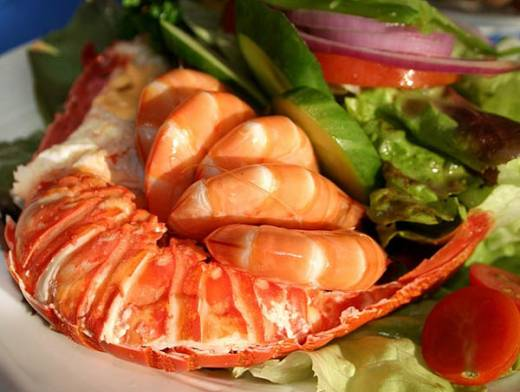
Элегантное поедание морепродуктов - одна из самых сложных тем на курсах застольного мастерства.
Говорят, что морепродукты - одна из самых сложных тем на курсах застольного этикета. Впрочем, если вы не собираетесь на прием к кому-то из европейских монархов, особо беспокоиться не стоит.
Всегда помните, что все правила и многочисленные приборы предназначены вовсе не ради того, чтобы кто-то из гостей мог похвастаться знанием тонкостей этикета, а исключительно для вашего удобства, чтобы вы скорее справились с верткими клешнями омара или быстрее добрались до сочного мяса королевских креветок.
Так что немного тренировки - и у вас все получится!
Набор приборов для морепродуктов.
Если же огромные креветки поданы как основное блюдо, то их едят с помощью ножа и вилки: сначала отсоединяют голову и хвост, середину поливают лимонным соком и едят, отрезая удобные кусочки.
У жаренных креветок виртуозы-повара обычно оставляют хвост, за который их нужно брать руками, макать в соус и есть.
Самая сложная задача встанет перед вами, если на столе окажутся неочищенные креветки. Левой рукой аккуратно берите их за голову, правой крепко хватайте за толстую часть хвоста и немного поверните его, чтобы панцирь раскрылся, затем вилкой доставайте мясо.
Панцири оставьте на краю тарелки или на блюдце, поданном специально для мусора.
Точно так же вы можете справиться с лангустами, отламывая им головки и вынимая мясо узкой устричной вилкой.
Если поблизости не окажется официанта, вам предстоит с помощью половника или щипцов переместить избранного красавца к себе на тарелку.
Справа от нее вы найдете необычный нож с отверстием. Этот прибор нужен, чтобы расколоть панцирь рака, а потом, вставив в отверстие клешню, надавить посильнее и переломить ее.
После всех этих почти хирургических маневров приступаем к трапезе: не спеша выедаем и высасываем мясо из клешней и лапок, держа их руками.
Затем, перевернув речное чудо на спинку, отделяем заднюю часть и вилкой вынимаем из нее мясо.
Вы, наверно, догадывайтесь, что огромный омар на громадном блюде предназначен не только вам?
Смело отламывайте от него части и кладите себе на тарелку!
Если перед вами оказалась необычная «ложко-вилка», то знайте, что зубом-крючком, расположенном на одном конце, следует выковыривать мясо из лапок, клешней и раковины, а ложкой на другом - вычерпывать сок.
Раскройте убежище моллюска, возьмите раковину правой рукой, поднесите ко рту и как бы высосите мидию с соусом.
Если же там только мясо, отковыряйте его вилкой.
Остатки соуса из тарелки можно доесть ложкой.
Сырые устрицы подают уже раскрытыми.
Однако, если вы купили их в магазине, то, прежде чем украсить ими стол, разъедините половинки при помощи специального тупого ножа с тонким закругленным лезвием и красиво разложите их на большом блюде, наполненном мелко колотым льдом.
На этой же тарелке следует разместить половинки или четвертинки лимона.
Едят этих обитательниц морских глубин при помощи особой крохотной тонкой узкой длинной вилки.
Придерживая раковину большим и указательным пальцами левой руки, сбрызните устрицу лимонным соком, аккуратно и бесшумно высосите жидкость. После этого, взяв в правую руку вилку, подцепите моллюска и съешьте.
С жареными устрицами проблем обычно не возникает: их можно отправлять в рот с помощью обычной вилки.
Испачкали руки? Не беда! Если морепродукты приходится есть не только приборами, на столе обычно стоят мисочки (иногда с плавающим в них кружочком лимона), чтобы вы могли споласкивать испачканные пальцы, а затем вытирать их салфеткой.
Говорят, что морепродукты - одна из самых сложных тем на курсах застольного этикета. Впрочем, если вы не собираетесь на прием к кому-то из европейских монархов, особо беспокоиться не стоит.
Всегда помните, что все правила и многочисленные приборы предназначены вовсе не ради того, чтобы кто-то из гостей мог похвастаться знанием тонкостей этикета, а исключительно для вашего удобства, чтобы вы скорее справились с верткими клешнями омара или быстрее добрались до сочного мяса королевских креветок.
Так что немного тренировки - и у вас все получится!
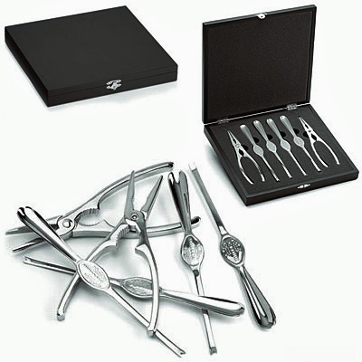
Набор приборов для морепродуктов.
Креветки
Чаще всего на званых обедах и в гостях мы встречаем креветок. Их любят подавать на фуршетах или перед началом торжественного приема как легкую закуску. Обычно для этого выбирают крупные экземпляры и протыкают их зубочистками. Таких гигантов принято есть целиком, обмакнув предварительно в стоящий неподалеку соус.Если же огромные креветки поданы как основное блюдо, то их едят с помощью ножа и вилки: сначала отсоединяют голову и хвост, середину поливают лимонным соком и едят, отрезая удобные кусочки.
У жаренных креветок виртуозы-повара обычно оставляют хвост, за который их нужно брать руками, макать в соус и есть.
Самая сложная задача встанет перед вами, если на столе окажутся неочищенные креветки. Левой рукой аккуратно берите их за голову, правой крепко хватайте за толстую часть хвоста и немного поверните его, чтобы панцирь раскрылся, затем вилкой доставайте мясо.
Панцири оставьте на краю тарелки или на блюдце, поданном специально для мусора.
Точно так же вы можете справиться с лангустами, отламывая им головки и вынимая мясо узкой устричной вилкой.
Раки
Раков подают либо плавающими в воде, в которой они варились, либо вынутыми из нее и разложенными на блюде.Если поблизости не окажется официанта, вам предстоит с помощью половника или щипцов переместить избранного красавца к себе на тарелку.
Справа от нее вы найдете необычный нож с отверстием. Этот прибор нужен, чтобы расколоть панцирь рака, а потом, вставив в отверстие клешню, надавить посильнее и переломить ее.
После всех этих почти хирургических маневров приступаем к трапезе: не спеша выедаем и высасываем мясо из клешней и лапок, держа их руками.
Затем, перевернув речное чудо на спинку, отделяем заднюю часть и вилкой вынимаем из нее мясо.
Омары и лангусты
Если вы освоили премудрости поедания речного членистоногого, то легко справитесь и с его морскими родственниками - лангустами и омарами. Их панцирь обычно более крепок, поэтому его принято раскалывать щипцами. Впрочем, иногда эту тяжелую физическую работу берут на себя повара, ломая защиту омаров еще на кухне. Этим же прибором колют слишком крепкие клешни.Вы, наверно, догадывайтесь, что огромный омар на громадном блюде предназначен не только вам?
Смело отламывайте от него части и кладите себе на тарелку!
Если перед вами оказалась необычная «ложко-вилка», то знайте, что зубом-крючком, расположенном на одном конце, следует выковыривать мясо из лапок, клешней и раковины, а ложкой на другом - вычерпывать сок.
Мидии
Элегантно расправиться с мидиями помогут небольшие щипчики, предназначенные для колки раковин, и вилка для устриц.Раскройте убежище моллюска, возьмите раковину правой рукой, поднесите ко рту и как бы высосите мидию с соусом.
Если же там только мясо, отковыряйте его вилкой.
Остатки соуса из тарелки можно доесть ложкой.
Устрицы
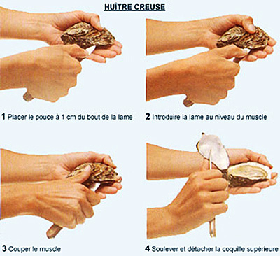
Сырые устрицы подают уже раскрытыми.
Однако, если вы купили их в магазине, то, прежде чем украсить ими стол, разъедините половинки при помощи специального тупого ножа с тонким закругленным лезвием и красиво разложите их на большом блюде, наполненном мелко колотым льдом.
На этой же тарелке следует разместить половинки или четвертинки лимона.
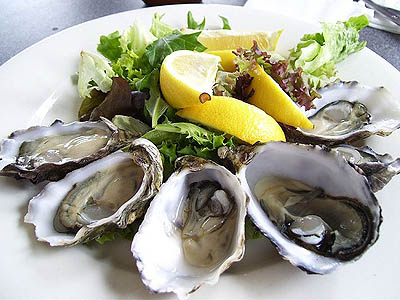
Едят этих обитательниц морских глубин при помощи особой крохотной тонкой узкой длинной вилки.
Придерживая раковину большим и указательным пальцами левой руки, сбрызните устрицу лимонным соком, аккуратно и бесшумно высосите жидкость. После этого, взяв в правую руку вилку, подцепите моллюска и съешьте.
С жареными устрицами проблем обычно не возникает: их можно отправлять в рот с помощью обычной вилки.
Испачкали руки? Не беда! Если морепродукты приходится есть не только приборами, на столе обычно стоят мисочки (иногда с плавающим в них кружочком лимона), чтобы вы могли споласкивать испачканные пальцы, а затем вытирать их салфеткой.
Овощной этикет:
как правильно есть дип-соус и артишоки
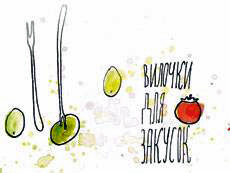
Зеленый горошек сорвался с вилки и выпал из тарелки, оливка улетела в
декольте сидящей по соседству дамы, листовой салат и болгарский перчик
оказались слишком большими, а артишок вообще вызвал шоковое состояние:
как же к нему подступиться? Чтобы с нами не случилось столь анекдотичных
ситуаций, учим правила овощного этикета.
Приборы для закусок обычно чуть меньше по размеру, чем для вторых блюд.
Когда салат идет в качестве гарнира к горячему и сервируется с котлетой, стейком или курицей на одной тарелке, смело берем в руки большой нож и вилку и приступаем к трапезе.
Нож особенно пригодится, если в блюде окажется приличный ломтик болгарского перца, целый листовой салат или съедобное украшение – художественно нарезанные помидоры, огурцы или редиска. Только не надо измельчать все сразу – отделяем небольшие кусочки лишь перед тем, как класть их в рот.
Если же вас угощают не сырыми, а отварными, тушеными или приготовленными на пару измельченными овощами, тогда нож понадобится лишь для того, чтобы помогать им накладывать блюдо на вилку. Обработанные плоды слишком мягкие, и нет необходимости дополнительно нарезать их в тарелке.
На фуршетах, банкетах и праздничных застольях часто сервируют большую тарелку с блюдом под названием «Овощная нарезка».
К ней обычно прилагают общие столовые приборы (щипцы или вилка) для накладывания на индивидуальные тарелки.
Воспользовавшись ими, возвращаем обратно и берем в руки нож с вилкой (брать овощи руками из тарелки неприлично).
Если салатные листочки и зелень (укроп, рукола) великоваты, но достаточно мягки, значит, их надо аккуратно намотать на вилку и только потом положить в рот. Если же они жесткие, разрезаем их на кусочки.
Когда нарезанные ровными дольками овощи подают вместе с соусами, такие блюда называют дипами.
Редис, кусочки сельдерея, моркови и крохотные помидорки черри на шпажках обычно макают в соус и отправляют в рот целиком. Если же ломтик оказался слишком велик, после откусывания не окунаем его в общий соусник. Причем это правило касается не только официальных застолий в роскошных ресторанных залах, но и демократичных пикников.
Конечно, на природе все проще, но это не значит, что настало время забыть об этикете!
Наколов на концы зубцов вилки кусочек основного блюда, переверните ее вогнутой стороной вверх и, помогая себе ножом, положите на нее немного горошка (как на ложку).
Если же шустрые шарики так и норовят ускользнуть из тарелки, прежде чем подхватить, чуть-чуть придавите их вилкой, и они сразу станут послушнее.
А вот накалывать горошины на зубцы не рекомендуется.
С оливками, маслинами и мелкими томатами черри обращаются несколько иначе, чем с горошком и кукурузой. Для их дегустации должны быть предусмотрены специальные крохотные вилочки или шпажки (иногда плоды на них уже наколоты). Нам остается лишь воткнуть их в плод, съесть его, а прибор отложить на край тарелки.
Впрочем, если трапеза неофициальная, вполне можно брать мелкие плоды руками.
Например, пюре надо есть с помощью ножа и вилки, накладывая на последнюю небольшие порции кушанья.
Если же на тарелке оказалась большая отварная картофелина, на первый план выходит вилка – отламываем ее ребром небольшие кусочки и помогаем ножом положить гарнир на прибор (накалывать на зубцы не принято).
Особая сноровка требуется для того, чтобы красиво есть картофель в мундире. В левую руку возьмем вилку и удерживаем клубень, а правой осторожно снимаем кожицу с помощью ножа.
Есть и другой способ: разрежем картофелину на половинки и извлекаем мякоть с помощью вилки.
Пожалуй, самый «трудный» овощ – это артишок.
В России он нечасто оказывается на столе, а вот риск встретиться с ним во время застолья где-нибудь в Европе очень велик.
Сначала осторожно, чтобы не поранить руки, отсоединим листья «бутона».
Потом обмакиваем их в соус и, стараясь не издавать громких неприличных звуков, высосем мякоть из жестких оболочек.
Как только расправимся с листочками, нужно ополоснуть руки в пиале с водой и съесть сердцевину при помощи вилки и ножа.
Важно
Фастфуд диктует свои правила, поэтому, если перекусываете картошкой фри на бегу, смело ешьте ее руками.
Но в торжественной обстановке это незамысловатое блюдо, поданное в качестве гарнира, надо употреблять по всем правилам, то есть с помощью ножа и вилки.
Салат: закуска и гарнир
Если свежие овощи подали в виде салата или винегрета, т.е. порезанными на мелкие кусочки и полностью готовыми к употреблению, значит, есть их надо классическим способом – с помощью ножа и вилки.Приборы для закусок обычно чуть меньше по размеру, чем для вторых блюд.
Когда салат идет в качестве гарнира к горячему и сервируется с котлетой, стейком или курицей на одной тарелке, смело берем в руки большой нож и вилку и приступаем к трапезе.
Нож особенно пригодится, если в блюде окажется приличный ломтик болгарского перца, целый листовой салат или съедобное украшение – художественно нарезанные помидоры, огурцы или редиска. Только не надо измельчать все сразу – отделяем небольшие кусочки лишь перед тем, как класть их в рот.
Если же вас угощают не сырыми, а отварными, тушеными или приготовленными на пару измельченными овощами, тогда нож понадобится лишь для того, чтобы помогать им накладывать блюдо на вилку. Обработанные плоды слишком мягкие, и нет необходимости дополнительно нарезать их в тарелке.
Овощная нарезка
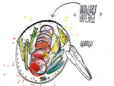
На фуршетах, банкетах и праздничных застольях часто сервируют большую тарелку с блюдом под названием «Овощная нарезка».
К ней обычно прилагают общие столовые приборы (щипцы или вилка) для накладывания на индивидуальные тарелки.
Воспользовавшись ими, возвращаем обратно и берем в руки нож с вилкой (брать овощи руками из тарелки неприлично).
Если салатные листочки и зелень (укроп, рукола) великоваты, но достаточно мягки, значит, их надо аккуратно намотать на вилку и только потом положить в рот. Если же они жесткие, разрезаем их на кусочки.
Дип-правила
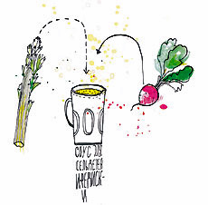
Когда нарезанные ровными дольками овощи подают вместе с соусами, такие блюда называют дипами.
Редис, кусочки сельдерея, моркови и крохотные помидорки черри на шпажках обычно макают в соус и отправляют в рот целиком. Если же ломтик оказался слишком велик, после откусывания не окунаем его в общий соусник. Причем это правило касается не только официальных застолий в роскошных ресторанных залах, но и демократичных пикников.
Конечно, на природе все проще, но это не значит, что настало время забыть об этикете!
Горох, кукуруза и оливки
Верткие горошинки и кукуруза при неумелом обращении могут превратиться в настоящие летающие снаряды, поражающие все живое вокруг. Чтобы этого не произошло, отнесемся к ним особенно внимательно.Наколов на концы зубцов вилки кусочек основного блюда, переверните ее вогнутой стороной вверх и, помогая себе ножом, положите на нее немного горошка (как на ложку).
Если же шустрые шарики так и норовят ускользнуть из тарелки, прежде чем подхватить, чуть-чуть придавите их вилкой, и они сразу станут послушнее.
А вот накалывать горошины на зубцы не рекомендуется.
С оливками, маслинами и мелкими томатами черри обращаются несколько иначе, чем с горошком и кукурузой. Для их дегустации должны быть предусмотрены специальные крохотные вилочки или шпажки (иногда плоды на них уже наколоты). Нам остается лишь воткнуть их в плод, съесть его, а прибор отложить на край тарелки.
Впрочем, если трапеза неофициальная, вполне можно брать мелкие плоды руками.
Картофельные страсти
Правильно вкушать разные яства из картофеля – особая наука.Например, пюре надо есть с помощью ножа и вилки, накладывая на последнюю небольшие порции кушанья.
Если же на тарелке оказалась большая отварная картофелина, на первый план выходит вилка – отламываем ее ребром небольшие кусочки и помогаем ножом положить гарнир на прибор (накалывать на зубцы не принято).
Особая сноровка требуется для того, чтобы красиво есть картофель в мундире. В левую руку возьмем вилку и удерживаем клубень, а правой осторожно снимаем кожицу с помощью ножа.
Есть и другой способ: разрежем картофелину на половинки и извлекаем мякоть с помощью вилки.
«Трудный» артишок
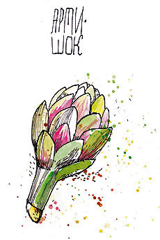
Пожалуй, самый «трудный» овощ – это артишок.
В России он нечасто оказывается на столе, а вот риск встретиться с ним во время застолья где-нибудь в Европе очень велик.
Сначала осторожно, чтобы не поранить руки, отсоединим листья «бутона».
Потом обмакиваем их в соус и, стараясь не издавать громких неприличных звуков, высосем мякоть из жестких оболочек.
Как только расправимся с листочками, нужно ополоснуть руки в пиале с водой и съесть сердцевину при помощи вилки и ножа.
Важно
Фастфуд диктует свои правила, поэтому, если перекусываете картошкой фри на бегу, смело ешьте ее руками.
Но в торжественной обстановке это незамысловатое блюдо, поданное в качестве гарнира, надо употреблять по всем правилам, то есть с помощью ножа и вилки.
Правила этикета:
как есть дичь
Когда видишь аппетитную поджаристую курочку или цыпленка, так и хочется
взять птичку в руки и обглодать все косточки. Наверное, первобытный
человек именно так бы и поступил. Но мы – цивилизованные люди, а значит,
нам придется лакомиться дичью по всем правилам этикета
Великолепные блюда готовят из откормленных домашних кур, уток, индеек, гусей, добытых на охоте диких перепелов, куропаток и рябчиков. Кушанья из птичьего мяса вкусные, в меру жирные, но лакомиться ими по всем правилам непросто.
Без проблем съедается только нежное филе, куриный рулет или котлета по-киевски: тебе нужно всего лишь вооружиться вилкой и ножом, аккуратно отрезать аппетитный кусочек и положить его в рот.
Главное, чтобы ломтики были небольшими и на коленях лежала салфетка, которая спасет от внезапно капнувшего соуса или жира.
Несложно также расправиться с рубленой птичкой в виде котлеток, биточков, фрикаделек, ведь мягкие блюда из фарша положено есть только вилкой.
Итак, чтобы не упасть в грязь лицом, вооружись вилкой и ножом и первым делом сними с птички кожу.
Потом, придерживая порцию зубьями вилки, срезай тонкие ломтики мяса и сразу их съедай.
Не следует сначала отсоединять от костей филе, формировать на тарелке пирамиду обрезков, а потом аппетитно ее уплетать.
Кроме того, увлекательный процесс потрошения курочки не должен мешать твоему общению с соседями по столу: человек, ковыряющийся в крылышке слишком долго, выглядит довольно нелепо.
Если не можешь справиться с мелкими фрагментами, лучше оставь кушанье недоеденным.
Кстати, когда крылышки или ножки подают в бульоне, сначала столовой ложкой съедается жидкость, а потом с помощью вилки и ножа мясо отделяется от костей и употребляется как второе блюдо.
Пиала с водой и ломтиком лимона (полоскательница для пальцев), розданные гостям одноразовые влажные салфетки или бумажный «колпачок», надетый на большую косточку куриной лапки, сигнализируют о том, что можно отложить приборы в сторону и почувствовать себя немного дикарем.
Аккуратно, кончиками большого и указательного пальцев правой руки, возьми ножку за косточку или надетую на нее папильотку (в случае с крылышками действуй похожим способом) и потихоньку откусывай кусочки мяса и обгладывай мелкие кости. Но ни в коем случае не разгрызай их.
Человек, хрустящий косточками и высасывающий из них внутренности, выглядит неприлично даже в окружении близких людей.
Закончив с птицей, надо осторожно опустить кончики пальцев в пиалу, но не болтать ими, чтобы не обрызгать соседей, и не погружать слишком глубоко.
Лимонный сок быстро избавит кожу от жира и специфического запаха, поэтому достаточно лишь слегка окунуть руки и вытереть их салфеткой.
Но прежде придется изучить анатомию птицы.
Сначала отделяются крылья, потом отрезаются поперечные куски с груди, за ними следуют кости с боков.
Обрати внимание на то, чтобы все кусочки были примерно равными с одинаковым количеством мяса.
Дабы никого не обидеть, белое мясо с грудки иногда докладывают к порциям с ножками и ребрами.
Если же курица тушилась в соусе, стоит позаботиться, чтобы им был полит каждый кусок.
Филе, котлетки, фрикадельки
Какие только птички не оказываются на нашем столе!Великолепные блюда готовят из откормленных домашних кур, уток, индеек, гусей, добытых на охоте диких перепелов, куропаток и рябчиков. Кушанья из птичьего мяса вкусные, в меру жирные, но лакомиться ими по всем правилам непросто.
Без проблем съедается только нежное филе, куриный рулет или котлета по-киевски: тебе нужно всего лишь вооружиться вилкой и ножом, аккуратно отрезать аппетитный кусочек и положить его в рот.
Главное, чтобы ломтики были небольшими и на коленях лежала салфетка, которая спасет от внезапно капнувшего соуса или жира.
Несложно также расправиться с рубленой птичкой в виде котлеток, биточков, фрикаделек, ведь мягкие блюда из фарша положено есть только вилкой.
Голень, крылышко, бедро
Если на тарелке оказывается не филе, а птичка с костями – ножка, бедрышко, крылышки или половинка тушки (например, цыпленок-табака), придется потрудиться и соблюсти главное правило: в официальной обстановке дичь руками не едят! Иначе испачканные пальцы надо регулярно споласкивать, а о гарнире и вовсе забыть – не брать же столовые приборы жирными пальцами.Итак, чтобы не упасть в грязь лицом, вооружись вилкой и ножом и первым делом сними с птички кожу.
Потом, придерживая порцию зубьями вилки, срезай тонкие ломтики мяса и сразу их съедай.
Не следует сначала отсоединять от костей филе, формировать на тарелке пирамиду обрезков, а потом аппетитно ее уплетать.
Кроме того, увлекательный процесс потрошения курочки не должен мешать твоему общению с соседями по столу: человек, ковыряющийся в крылышке слишком долго, выглядит довольно нелепо.
Если не можешь справиться с мелкими фрагментами, лучше оставь кушанье недоеденным.
Кстати, когда крылышки или ножки подают в бульоне, сначала столовой ложкой съедается жидкость, а потом с помощью вилки и ножа мясо отделяется от костей и употребляется как второе блюдо.
Ножка
Дома, в гостях у друзей и родственников ты можешь расслабиться – правила этикета в неофициальной обстановке не слишком строги.Пиала с водой и ломтиком лимона (полоскательница для пальцев), розданные гостям одноразовые влажные салфетки или бумажный «колпачок», надетый на большую косточку куриной лапки, сигнализируют о том, что можно отложить приборы в сторону и почувствовать себя немного дикарем.
Аккуратно, кончиками большого и указательного пальцев правой руки, возьми ножку за косточку или надетую на нее папильотку (в случае с крылышками действуй похожим способом) и потихоньку откусывай кусочки мяса и обгладывай мелкие кости. Но ни в коем случае не разгрызай их.
Человек, хрустящий косточками и высасывающий из них внутренности, выглядит неприлично даже в окружении близких людей.
Закончив с птицей, надо осторожно опустить кончики пальцев в пиалу, но не болтать ими, чтобы не обрызгать соседей, и не погружать слишком глубоко.
Лимонный сок быстро избавит кожу от жира и специфического запаха, поэтому достаточно лишь слегка окунуть руки и вытереть их салфеткой.
Курочка-гриль
Иногда на больших застольях запеченные гусь, утка, курица или индейка водружаются на стол целиком. В этом случае разделать тушку должен официант (если дело происходит в ресторане) или хозяин (хозяйка) дома.Но прежде придется изучить анатомию птицы.
Сначала отделяются крылья, потом отрезаются поперечные куски с груди, за ними следуют кости с боков.
Обрати внимание на то, чтобы все кусочки были примерно равными с одинаковым количеством мяса.
Дабы никого не обидеть, белое мясо с грудки иногда докладывают к порциям с ножками и ребрами.
Если же курица тушилась в соусе, стоит позаботиться, чтобы им был полит каждый кусок.
Тонкости этикета:
как правильно есть блины
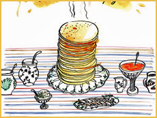
Золотистые, румяные, аппетитные, с пылу с жару блинчики так и просятся
скорее в рот! Только как их надо есть – руками или вилкой, откусывая или
отрезая? На этот счет есть свои правила
Главное правило «поглощения» блинов гласит – кушать их надо непременно горячими!
Выложи солнечное угощение стопочкой в центре стола и не забудь подать к нему разнообразную начинку.
Если выбираешь соленые закуски, филе семги или сельди (никаких костей!) выложи в неглубокую тарелочку с общей вилочкой, а икру – в хрустальную розетку с ложечкой.
Каждому гостю подай индивидуальную десертную посуду и приборы, чтобы он смог взять угощение общими столовыми приспособлениями, вернуть их на место и воспользоваться своими.
По такому же принципу сервируются варенье, сметана и мед.
Рядом с тарелкой гостя ставятся пустые розетки с чайными ложечками – какую начинку он захочет, такую и положит.
Если приготовишь блинчики с мясным фаршем, вместе с ними придется подать горячий бульон. Его необходимо разлить по небольшим пиалам, раздать каждому гостю и приступить к самому приятному – дегустации.
В старину каждый кругляш считался обрядовым кушаньем, символом солнца, наступления весны и надежды на сытную жизнь.
«Солнышко» просто грех было жестоко резать ножом и нанизывать на вилку.
Блин полагалось брать руками, макать его в понравившуюся начинку или заворачивать в него кусочки рыбки и смачно откусывать.
Дома ты можешь запросто следовать народным традициям и, не стесняясь, вымазать свои ручки в жире. Складывай блинчики в конвертики или скручивай их в рулетики и наслаждайся вкуснятиной.
Если угощения с творогом, мясом или другими начинками, также не стесняйся их есть руками и не ругай за такое поведение своего ребенка.
Главное перед трапезой – запастись салфетками, чтобы потом было чем вытереть жир.
Блинчики мы едим не только дома, но и в гостях, на обеде с коллегами, во время деловых переговоров и романтических встреч.
В официальной обстановке стоит напрочь забыть народный этикет и вспомнить о том, как правильно пользоваться ножом и вилкой. Хорошо, если на фуршете знаменитое блюдо подают порционно.
Тебе лишь останется придержать вилкой край блина, отрезать от трубочки или конвертика небольшой ломтик и отправить его в рот.
Если угощение красуется общей стопочкой на столе в жаропрочной посуде, задача усложняется.
Одним зубцом вилки надо суметь зацепить край верхнего солнечного кругляша и, вращая столовый прибор от себя, свернуть блин в трубочку.
В таком виде перенеси угощение на свою тарелку, разверни его и намажь с помощью ножа любую начинку.
Затем «солнышко» вновь преврати в трубочку и лишь после этого начинай резать его на ломтики.
Если же начинка жидкая (мед, сметана, варенье или ягодный соус) и находится в индивидуальной розетке, блин не разворачивай, а сразу измельчай на кусочки и обмакивай в понравившееся угощение.
Каждой начинке свое место
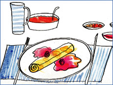
Главное правило «поглощения» блинов гласит – кушать их надо непременно горячими!
Выложи солнечное угощение стопочкой в центре стола и не забудь подать к нему разнообразную начинку.
Если выбираешь соленые закуски, филе семги или сельди (никаких костей!) выложи в неглубокую тарелочку с общей вилочкой, а икру – в хрустальную розетку с ложечкой.
Каждому гостю подай индивидуальную десертную посуду и приборы, чтобы он смог взять угощение общими столовыми приспособлениями, вернуть их на место и воспользоваться своими.
По такому же принципу сервируются варенье, сметана и мед.
Рядом с тарелкой гостя ставятся пустые розетки с чайными ложечками – какую начинку он захочет, такую и положит.
Если приготовишь блинчики с мясным фаршем, вместе с ними придется подать горячий бульон. Его необходимо разлить по небольшим пиалам, раздать каждому гостю и приступить к самому приятному – дегустации.
По русской традиции
Древняя русская пословица гласит: «Блин – не стог, на вилы не наколешь».В старину каждый кругляш считался обрядовым кушаньем, символом солнца, наступления весны и надежды на сытную жизнь.
«Солнышко» просто грех было жестоко резать ножом и нанизывать на вилку.
Блин полагалось брать руками, макать его в понравившуюся начинку или заворачивать в него кусочки рыбки и смачно откусывать.
Дома ты можешь запросто следовать народным традициям и, не стесняясь, вымазать свои ручки в жире. Складывай блинчики в конвертики или скручивай их в рулетики и наслаждайся вкуснятиной.
Если угощения с творогом, мясом или другими начинками, также не стесняйся их есть руками и не ругай за такое поведение своего ребенка.
Главное перед трапезой – запастись салфетками, чтобы потом было чем вытереть жир.
На фуршете, и не только
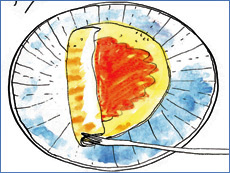
Блинчики мы едим не только дома, но и в гостях, на обеде с коллегами, во время деловых переговоров и романтических встреч.
В официальной обстановке стоит напрочь забыть народный этикет и вспомнить о том, как правильно пользоваться ножом и вилкой. Хорошо, если на фуршете знаменитое блюдо подают порционно.
Тебе лишь останется придержать вилкой край блина, отрезать от трубочки или конвертика небольшой ломтик и отправить его в рот.
Если угощение красуется общей стопочкой на столе в жаропрочной посуде, задача усложняется.
Одним зубцом вилки надо суметь зацепить край верхнего солнечного кругляша и, вращая столовый прибор от себя, свернуть блин в трубочку.
В таком виде перенеси угощение на свою тарелку, разверни его и намажь с помощью ножа любую начинку.
Затем «солнышко» вновь преврати в трубочку и лишь после этого начинай резать его на ломтики.
Если же начинка жидкая (мед, сметана, варенье или ягодный соус) и находится в индивидуальной розетке, блин не разворачивай, а сразу измельчай на кусочки и обмакивай в понравившееся угощение.
Соусные хитрости:
подаем и едим по правилам этикета
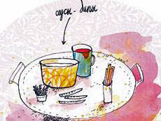
Как плохой соус может испортить самое изысканное блюдо, так и
неправильное обращение с ним (вылизывание соусника, брызги на скатерть)
способно погубить репутацию. Ну а чтобы избежать катастрофы, надо просто
соблюдать правила соусного этикета.
Если соус предназначен индивидуально каждому гостю, тогда крохотную чашечку размещают слева, над тарелочкой для пирожков.
При этом носик сосуда должен быть направлен вправо. Туда же смотрит и ручка чайной или десертной ложки, которая лежит на блюдце: она нужна для зачерпывания ароматной вкусной жидкости.
Если же соус наливают не в индивидуальные чаши, а в общие, тогда их ставят рядом с кушаньем. И ложки используют специальные. Они несколько крупнее и глубже чайных, а также снабжены небольшим носиком.
Желательно, чтобы соус из общей чаши разливала хозяйка или официант, – так будет безопаснее для всех.
Впрочем, нередко гости решают справиться с этой задачей своими силами и пускают прибор по кругу.
В этом случае осторожно возьмите блюдце с чашей и аккуратно зачерпните соус ложкой.
Постарайтесь наливать его на основное кушанье, а не на гарнир.
Считается, что вкус заправки создан для того, чтобы оттенить и подчеркнуть достоинства главного блюда, а картофельное пюре или овощи, залитые густой жидкостью, становятся некрасивыми и неаппетитными.
Если же вы не успели вовремя обмакнуть мясо в соус и решили полить его на весу прямо на вилке, остановитесь: так делать нельзя. Лучше съесть сухой кусочек, чем прослыть невоспитанным человеком.
Если же пара разноцветных пятен все-таки осталась на белоснежной поверхности стола и официант не пришел вовремя на помощь, не привлекайте внимания к этому, просто промокните капли салфеткой или закройте ею грязное место.
Соуса должно хватить всем собравшимся, поэтому не жадничайте, когда накладываете его в тарелку.
И старайтесь рассчитать количество таким образом, чтобы доесть его вместе с остальной пищей.
Если же глазомер подвел, ничего не поделаешь – на торжественном обеде даже самую вкусную заправку придется оставить на блюде. Вы ведь не настолько голодны, чтобы вылизывать тарелку.
Также неприлично водить кусочками хлеба в соусных лужицах, а потом смачно их обсасывать.
В крайнем случае и только в неофициальной обстановке можно положить мякиш в соус и затем достать его из тарелки при помощи вилки.
К персональным вилкам и ножам добавляется специальная ложка.
Правда, узнать ее не очень просто, потому что дизайнеры столовых приборов никак не могут прийти к единому решению.
Чаще всего она похожа на десертную ложку, но более плоская, чтобы было сподручно вычерпывать подливу.
К рыбным блюдам могут подать еще более причудливый прибор, похожий на гибрид ножа и ложки. Им хорошо отделять кусочки филе и тут же поливать их соусом.
Для обмакивания также предназначены густые соусы-дипы.
Обычно их ставят в центр, а вокруг раскладывают брусочки свежих овощей.
Надо взять огурец (морковку, сельдерей, листья артишоков) руками, погрузить его в пиалу и съесть.
Если вы откусили кусочек, больше не окунайте овощ в общий соусник – это неприлично и не гигиенично.
Суси (суши) или сашими принято употреблять с соевым соусом, который подают в специальных небольших чашечках. Чтобы полакомиться японским блюдом, рисовые колобки или рыбу надо аккуратно взять палочками и обмакнуть в соус. Причем окунается в соевую жидкость не рисовая сторона, а рыбная.
Точно так же принято сдабривать соусом традиционный тайский липкий рис, особенно распространенный на севере страны. Небольшие чашечки с несколькими заправками, как правило, ставят посередине стола. По местному этикету, надо отщипнуть рукой от вязкой массы зерен небольшой комочек и потом обмакнуть его в общую пиалу с приглянувшимся соусом. Только делать это нужно осторожно – незнакомая заправка может оказаться слишком острой.
Куда поставить соусник?
Соус принято подавать на стол в соуснике – небольшой и очень изящной продолговатой чашке с носиком и одной ручкой. Ставят ее не на скатерть, которую можно нечаянно испачкать каплями, а на блюдце, покрытое салфеткой.Если соус предназначен индивидуально каждому гостю, тогда крохотную чашечку размещают слева, над тарелочкой для пирожков.
При этом носик сосуда должен быть направлен вправо. Туда же смотрит и ручка чайной или десертной ложки, которая лежит на блюдце: она нужна для зачерпывания ароматной вкусной жидкости.
Если же соус наливают не в индивидуальные чаши, а в общие, тогда их ставят рядом с кушаньем. И ложки используют специальные. Они несколько крупнее и глубже чайных, а также снабжены небольшим носиком.
Не лей на гарнир
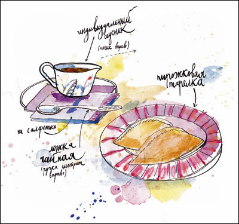
Желательно, чтобы соус из общей чаши разливала хозяйка или официант, – так будет безопаснее для всех.
Впрочем, нередко гости решают справиться с этой задачей своими силами и пускают прибор по кругу.
В этом случае осторожно возьмите блюдце с чашей и аккуратно зачерпните соус ложкой.
Постарайтесь наливать его на основное кушанье, а не на гарнир.
Считается, что вкус заправки создан для того, чтобы оттенить и подчеркнуть достоинства главного блюда, а картофельное пюре или овощи, залитые густой жидкостью, становятся некрасивыми и неаппетитными.
Если же вы не успели вовремя обмакнуть мясо в соус и решили полить его на весу прямо на вилке, остановитесь: так делать нельзя. Лучше съесть сухой кусочек, чем прослыть невоспитанным человеком.
Облизывать и обмакивать не положено
Наливайте соус осторожно, чтобы не капнуть на скатерть.Если же пара разноцветных пятен все-таки осталась на белоснежной поверхности стола и официант не пришел вовремя на помощь, не привлекайте внимания к этому, просто промокните капли салфеткой или закройте ею грязное место.
Соуса должно хватить всем собравшимся, поэтому не жадничайте, когда накладываете его в тарелку.
И старайтесь рассчитать количество таким образом, чтобы доесть его вместе с остальной пищей.
Если же глазомер подвел, ничего не поделаешь – на торжественном обеде даже самую вкусную заправку придется оставить на блюде. Вы ведь не настолько голодны, чтобы вылизывать тарелку.
Также неприлично водить кусочками хлеба в соусных лужицах, а потом смачно их обсасывать.
В крайнем случае и только в неофициальной обстановке можно положить мякиш в соус и затем достать его из тарелки при помощи вилки.
Гибрид ножа и ложки
Если вам подали блюдо, в котором соус уже лежит на тарелке, правила дегустации будут несколько другими.К персональным вилкам и ножам добавляется специальная ложка.
Правда, узнать ее не очень просто, потому что дизайнеры столовых приборов никак не могут прийти к единому решению.
Чаще всего она похожа на десертную ложку, но более плоская, чтобы было сподручно вычерпывать подливу.
К рыбным блюдам могут подать еще более причудливый прибор, похожий на гибрид ножа и ложки. Им хорошо отделять кусочки филе и тут же поливать их соусом.
Дип-тонкости
Существуют продукты, которые принято обмакивать в соус. Например, так расправляются с моллюсками: сначала с помощью специальной вилки их извлекают из раковин, затем осторожно погружают в индивидуальный соусник и только потом съедают.Для обмакивания также предназначены густые соусы-дипы.
Обычно их ставят в центр, а вокруг раскладывают брусочки свежих овощей.
Надо взять огурец (морковку, сельдерей, листья артишоков) руками, погрузить его в пиалу и съесть.
Если вы откусили кусочек, больше не окунайте овощ в общий соусник – это неприлично и не гигиенично.
Соевые хитрости
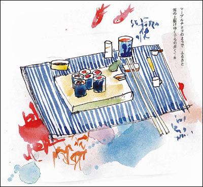
Суси (суши) или сашими принято употреблять с соевым соусом, который подают в специальных небольших чашечках. Чтобы полакомиться японским блюдом, рисовые колобки или рыбу надо аккуратно взять палочками и обмакнуть в соус. Причем окунается в соевую жидкость не рисовая сторона, а рыбная.
Точно так же принято сдабривать соусом традиционный тайский липкий рис, особенно распространенный на севере страны. Небольшие чашечки с несколькими заправками, как правило, ставят посередине стола. По местному этикету, надо отщипнуть рукой от вязкой массы зерен небольшой комочек и потом обмакнуть его в общую пиалу с приглянувшимся соусом. Только делать это нужно осторожно – незнакомая заправка может оказаться слишком острой.
Язык ножей и вилок:
как не остаться голодным на приеме
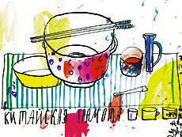
Язык знаков в ресторане нередко заменяет слова. Чтобы вас правильно понимали, нужно овладеть им в совершенстве.
У вас в жизни наверняка были случаи, когда в ресторане вы выходили позвонить и оставляли на столе полупустую тарелку, надеясь позже доесть понравившийся салат. Но вот ужас: вы возвращаетесь, а блюдо уже унесли! И не надо в данной ситуации ругать официанта – наверняка вы сами дали ему понять, что обед завершен. Язык знаков в ресторане нередко заменяет слова. Чтобы вас правильно понимали, нужно овладеть им в совершенстве.
Большинство знаков за столом принято подавать с помощью приборов. Если хочется ненадолго освободить руки (чтобы взять хлеб или спокойно поговорить с соседом), вилку следует положить слева, а нож справа так, чтобы ручками они опирались на стол, а кончиками, слегка развернутыми от едока, – на тарелку. Если пользуетесь только вилкой, точно так же водрузите ее справа от себя.
Иногда во время трапезы требуется немного отдохнуть, отойти по своим делам, выйти покурить или поговорить по телефону. Для столь длительных пауз существуют свои сигналы. Приборы перекрещивают на тарелке, причем нож кладут острием влево, а вилку – зубцами вправо. Это будет знак официанту, что трапеза еще не закончена и блюдо уносить не нужно. Данное правило иногда даже слишком скрупулезно соблюдается в европейских странах. Порой сидящие за столом люди долгое время ждут следующего блюда лишь из-за того, что один из них не знает правил этикета (скрестил приборы на тарелке), ведь в ресторанах принято менять кушанья всей компании одновременно, и вымуштрованный официант будет ждать, пока все не закончат.
Если хочешь показать официанту, что твою тарелку пора убирать, не нужно отодвигать ее от себя или кидать в нее грязные салфетки. Достаточно просто положить приборы параллельно друг другу так, чтобы ручки соответствовали стрелкам, указывающим на полшестого. При этом лезвие ножа смотрит на едока, а зубцы вилки – вверх. Точно так же следует класть вилку и ложку после того, как съешь десерт.
Точно так же принято поступать, когда салаты или десерты подают в глубоких вазочках или пиалах, куда положить нож или вилку невозможно. Такую посуду обычно ставят на мелкое сервировочное блюдо. Пока не закончите дегустацию, пусть ваши вилка и нож опираются на него кончиками, как на обычную тарелку, а в завершение положите приборы параллельно – это должно привлечь внимание официанта. Если же вазочка позволяет, допустимо оставить ложку прямо в ней.
Если вы решили ненадолго отлучиться из-за стола, ее нужно оставить на стуле, а вернувшись, опять аккуратно сложить вдвое и поместить на колени.
Когда вы покидаете ресторан, следует положить салфетку использованной стороной внутрь слева от тарелки – тогда официант поймет, что человек больше не придет и его посуду можно убирать.
Главное – никогда не кладите тканевые салфетки в посуду!
Тщательно сворачивать их или пытаться придать исходный вид, сооружая фигуры, тоже не стоит.
У вас в жизни наверняка были случаи, когда в ресторане вы выходили позвонить и оставляли на столе полупустую тарелку, надеясь позже доесть понравившийся салат. Но вот ужас: вы возвращаетесь, а блюдо уже унесли! И не надо в данной ситуации ругать официанта – наверняка вы сами дали ему понять, что обед завершен. Язык знаков в ресторане нередко заменяет слова. Чтобы вас правильно понимали, нужно овладеть им в совершенстве.
Трапеза продолжается
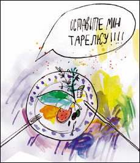
Большинство знаков за столом принято подавать с помощью приборов. Если хочется ненадолго освободить руки (чтобы взять хлеб или спокойно поговорить с соседом), вилку следует положить слева, а нож справа так, чтобы ручками они опирались на стол, а кончиками, слегка развернутыми от едока, – на тарелку. Если пользуетесь только вилкой, точно так же водрузите ее справа от себя.
Иногда во время трапезы требуется немного отдохнуть, отойти по своим делам, выйти покурить или поговорить по телефону. Для столь длительных пауз существуют свои сигналы. Приборы перекрещивают на тарелке, причем нож кладут острием влево, а вилку – зубцами вправо. Это будет знак официанту, что трапеза еще не закончена и блюдо уносить не нужно. Данное правило иногда даже слишком скрупулезно соблюдается в европейских странах. Порой сидящие за столом люди долгое время ждут следующего блюда лишь из-за того, что один из них не знает правил этикета (скрестил приборы на тарелке), ведь в ресторанах принято менять кушанья всей компании одновременно, и вымуштрованный официант будет ждать, пока все не закончат.
Обед закончен!
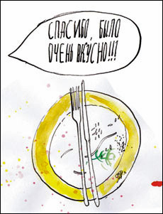
Если хочешь показать официанту, что твою тарелку пора убирать, не нужно отодвигать ее от себя или кидать в нее грязные салфетки. Достаточно просто положить приборы параллельно друг другу так, чтобы ручки соответствовали стрелкам, указывающим на полшестого. При этом лезвие ножа смотрит на едока, а зубцы вилки – вверх. Точно так же следует класть вилку и ложку после того, как съешь десерт.
Сигнальная ложка
Столовой ложкой правильно просигнализировать официанту сложнее. Обычно суп подается в глубокой тарелке, стоящей на мелкой. После завершения трапезы в европейских ресторанах принято вынимать ложку и класть ее на нижнее блюдо. Прибор, оставленный в супе, будет расценен как знак, что гость хочет продолжить дегустацию. В наших ресторанах считается допустимым оставлять ложку в тарелке независимо от того, решила ты просто отдохнуть или закончить трапезу. Внимательный официант, конечно, уточнит, что именно вы имеете в виду, но если не хотите раньше времени расстаться с супом, следите, чтобы его ненароком не унесли.Точно так же принято поступать, когда салаты или десерты подают в глубоких вазочках или пиалах, куда положить нож или вилку невозможно. Такую посуду обычно ставят на мелкое сервировочное блюдо. Пока не закончите дегустацию, пусть ваши вилка и нож опираются на него кончиками, как на обычную тарелку, а в завершение положите приборы параллельно – это должно привлечь внимание официанта. Если же вазочка позволяет, допустимо оставить ложку прямо в ней.
Восточные премудрости
В восточных ресторанах существуют свои премудрости. Если вы в китайском заведении, закончите еду, положив палочки поперек миски концами влево, – это будет сообщением официанту, что настало время убрать лишнюю посуду. А вот в японском заведении так поступать нельзя. Во время и после окончания трапезы хаси кладутся на прежнее место, то есть на прямоугольную подставку, острыми концами вверх.Салфетка у тарелки
Собственной сигнальной системой обладает и тканевая салфетка.Если вы решили ненадолго отлучиться из-за стола, ее нужно оставить на стуле, а вернувшись, опять аккуратно сложить вдвое и поместить на колени.
Когда вы покидаете ресторан, следует положить салфетку использованной стороной внутрь слева от тарелки – тогда официант поймет, что человек больше не придет и его посуду можно убирать.
Главное – никогда не кладите тканевые салфетки в посуду!
Тщательно сворачивать их или пытаться придать исходный вид, сооружая фигуры, тоже не стоит.
Конфуз за столом:
как красиво выйти из глупой ситуации
В тарелке с супом оказалась мушка, большой кусок мяса в жирном соусе
шлепнулся на скатерть, вилка упала на пол, вы поперхнулись, чихнули,
подавились, съели жгучий перчик чили… Увы, рано или поздно это может
случиться с каждым из нас. Главное – не впадать в панику и не привлекать
к себе внимание, а вспомнить о том, как надо вести себя в неловких
ситуациях.
Впрочем, во время вечеринки непослушная еда может хлопнуться не только на стол, но и на ваш наряд. В данной ситуации просто протрите пятно салфеткой. Если же вы умудрились опрокинуть на себя полную тарелку супа, извинитесь, выйдите из-за стола и приведите себя в порядок в туалете. Куда хуже, если вы облили своего соседа. В этом случае просите прощения и делайте все возможное, чтобы устранить последствия конфуза.
Совсем другое дело, когда еда или столовые приборы падают на пол. В подобной ситуации не надо спрыгивать со стула и лезть под стол в поисках укатившейся оливки или «убежавшей» вилки. Согласно этикету с пола ничего поднимать не следует: что упало – то пропало! Для того чтобы раздобыть новые приборы, просто обратитесь к официанту.
Если кашель мучает вас, из-за того что вы больны, обязательно носите с собой леденцы, а еще лучше – сидите дома до полного выздоровления. Не стоит выходить в люди и при сильном насморке. Но если вам совершенно необходимо посетить важный банкет и во время трапезы вы почувствовали, что не высморкаться невозможно, сделайте это как можно тише. Причем обязательно в платок, а не в салфетку! Если же его под рукой не оказалось, дойдите до туалета.
Громко чихать за столом – тоже признак невоспитанности. Поэтому, как только почувствуете, что запершило в носу, тихонько потрите переносицу рукой – обычно так удается усмирить желание сделать смачное «апчхи!». Если же не успеете остановить чих, прикрой рот платком (в крайнем случае – рукой) и отвернись от людей и еды.
Но если ты все-таки взяли в рот слишком горячий кусок, быстро запейте его любым напитком. Это более эффективно и прилично, чем широко открывать рот, высовывать язык и активно махать руками, нагнетая воздух и привлекая к себе внимание.
Если же еда оказалась не горячей, а слишком острой, наоборот, ни в коем случае не тянитесь к бокалу с водой.
Блюда с перчинкой лучше заедать чем-то нейтральным – рисом, картошкой, пастой.
Бывает, что проглотить острую (кислую, соленую, горькую) пищу совершенно невозможно. В этом случае незаметно (как будто вытираете губы) поднесите ко рту салфетку и сплюньте в нее кусочек.
Еще одна неприятность, которая может подстерегать дегустатора за столом, – волосы, мухи и прочие несъедобные объекты в тарелке.
В таком случае действуйте по обстоятельствам.
Скажем, если неразумное насекомое совершило акт самоубийства в вашем бокале, можно тихонько попросить официанта заменить прибор.
Другие несъедобные предметы просто выложите на край тарелки.
Причем, постарайтесь все сделать так, чтобы не испортить аппетит окружающим.
Однако если вы обнаруживаете в блюде не мушку или ворсинку, а ржавый гвоздь или мохнатый хвостик, тогда привлекайте внимание не только официанта, но и администратора ресторана.
Впрочем, даже в такой ситуации не надо делать харакири или пить цианистый калий.
Попробуйте скрыть отрыжку, быстро закашлявшись, – окружающие даже не поймут, что произошло.
А вот приступ метеоризма обыгрывать не надо.
Постарайтесь сделать вид, будто ничего не случилось и мысленно успокаивайте себя тем, что сдерживать естественный порыв вредно для здоровья. В конце концов, люди могут даже не догадаться, кто конкретно испортил воздух.
Упала паста, упала на пол
Когда с вашей вилки на скатерть падает кусочек брокколи или курочки, осторожно подхватите его ножом, положите на край тарелки и сделайте вид, будто ничего не случилось. Совсем другое дело, если ломтик оказался не сухим, а щедро сдобренным жирным соусом, который оставил яркий след на столе. В этом случае (а также когда проливаем напиток) промокните грязное место салфеткой и оставьте ее на скатерти прикрывать следы преступления. Поверьте, если вы не будите активно просить прощения у всех присутствующих, а просто виновато улыбнетесь, о происшествии забудут очень быстро.Впрочем, во время вечеринки непослушная еда может хлопнуться не только на стол, но и на ваш наряд. В данной ситуации просто протрите пятно салфеткой. Если же вы умудрились опрокинуть на себя полную тарелку супа, извинитесь, выйдите из-за стола и приведите себя в порядок в туалете. Куда хуже, если вы облили своего соседа. В этом случае просите прощения и делайте все возможное, чтобы устранить последствия конфуза.
Совсем другое дело, когда еда или столовые приборы падают на пол. В подобной ситуации не надо спрыгивать со стула и лезть под стол в поисках укатившейся оливки или «убежавшей» вилки. Согласно этикету с пола ничего поднимать не следует: что упало – то пропало! Для того чтобы раздобыть новые приборы, просто обратитесь к официанту.
Апчхи!
Взрослые постоянно напоминают детям известную пословицу «Когда я ем, я глух и нем», однако сами, как правило, активно поддерживают застольную беседу, рискуя поперхнуться едой. Если с вами случится подобная неприятность, глотните воды и пару раз кашляните, прикрыв рот рукой, а еще лучше – платком. Если же побороть кашель никак не удается, извинитесь, выйдите из-за стола и постарайтесь прийти в себя в другом помещении. Причем сделайте это еще до того момента, когда окружающие начнут молотить вас по спине (чего врачи, кстати, не рекомендуют).Если кашель мучает вас, из-за того что вы больны, обязательно носите с собой леденцы, а еще лучше – сидите дома до полного выздоровления. Не стоит выходить в люди и при сильном насморке. Но если вам совершенно необходимо посетить важный банкет и во время трапезы вы почувствовали, что не высморкаться невозможно, сделайте это как можно тише. Причем обязательно в платок, а не в салфетку! Если же его под рукой не оказалось, дойдите до туалета.
Громко чихать за столом – тоже признак невоспитанности. Поэтому, как только почувствуете, что запершило в носу, тихонько потрите переносицу рукой – обычно так удается усмирить желание сделать смачное «апчхи!». Если же не успеете остановить чих, прикрой рот платком (в крайнем случае – рукой) и отвернись от людей и еды.
Огонь на языке
Когда официанты разносят еду с пылу с жару, обычно они предупреждают о том, чтобы гости были осторожны.Но если ты все-таки взяли в рот слишком горячий кусок, быстро запейте его любым напитком. Это более эффективно и прилично, чем широко открывать рот, высовывать язык и активно махать руками, нагнетая воздух и привлекая к себе внимание.
Если же еда оказалась не горячей, а слишком острой, наоборот, ни в коем случае не тянитесь к бокалу с водой.
Блюда с перчинкой лучше заедать чем-то нейтральным – рисом, картошкой, пастой.
Бывает, что проглотить острую (кислую, соленую, горькую) пищу совершенно невозможно. В этом случае незаметно (как будто вытираете губы) поднесите ко рту салфетку и сплюньте в нее кусочек.
Муха в тарелке
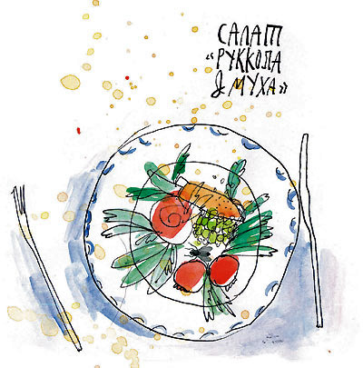
Еще одна неприятность, которая может подстерегать дегустатора за столом, – волосы, мухи и прочие несъедобные объекты в тарелке.
В таком случае действуйте по обстоятельствам.
Скажем, если неразумное насекомое совершило акт самоубийства в вашем бокале, можно тихонько попросить официанта заменить прибор.
Другие несъедобные предметы просто выложите на край тарелки.
Причем, постарайтесь все сделать так, чтобы не испортить аппетит окружающим.
Однако если вы обнаруживаете в блюде не мушку или ворсинку, а ржавый гвоздь или мохнатый хвостик, тогда привлекайте внимание не только официанта, но и администратора ресторана.
Команда «Газы!»
Пожалуй, самое неприятное, что может произойти за столом, – случайно громко рыгнуть или выпустить газы.Впрочем, даже в такой ситуации не надо делать харакири или пить цианистый калий.
Попробуйте скрыть отрыжку, быстро закашлявшись, – окружающие даже не поймут, что произошло.
А вот приступ метеоризма обыгрывать не надо.
Постарайтесь сделать вид, будто ничего не случилось и мысленно успокаивайте себя тем, что сдерживать естественный порыв вредно для здоровья. В конце концов, люди могут даже не догадаться, кто конкретно испортил воздух.
Если за столом приходится пользоваться
палочками для еды
палочками для еды
Изобрели их в Китае. В те времена, когда наши предки в Европе ещё ели руками, китайцы уже тренировали ловкость пальцев палочками.
Уже в XII веке до н.э. властители династии Шань пользовались "удлинёнными пальцами" - палочками. Тогда их делали из ценных материалов - нефрита, агата, слоновой кости или серебра.
Сегодня их обычно изготавливают из бамбука, дерева или пластмассы. Китайцы называют палочки kuaizi, что в переводе означает "ускоритель"; это так и есть, по крайней мере, в умелых руках, потому что китайцы едят быстро и не стесняются держать мисочку с рисом у самого рта, чтобы "ускорять" палочками движение риса.
Из Китая палочки пришли и в те страны, на которые было велико историческое воздействие китайской культуры – в Японию, Корею и некоторых других.
Палочки бывают разные: короткие, около 25 см, чтобы есть из мисочек или с подносов, и длинные, 35 см, из бамбука, для взбивания яиц или перемешивания соусов.
Еда палочками - вопрос тренировки: нижняя палочка закрепляется между косточкой указательного пальца и большим пальцем, верхняя остаётся подвижной для захвата еды.
Научиться пользоваться палочками - не такой уж большой труд.
Просмотрите картинки, все хорошенько запомните и главное - побольше тренироваться.
Уже в XII веке до н.э. властители династии Шань пользовались "удлинёнными пальцами" - палочками. Тогда их делали из ценных материалов - нефрита, агата, слоновой кости или серебра.
Сегодня их обычно изготавливают из бамбука, дерева или пластмассы. Китайцы называют палочки kuaizi, что в переводе означает "ускоритель"; это так и есть, по крайней мере, в умелых руках, потому что китайцы едят быстро и не стесняются держать мисочку с рисом у самого рта, чтобы "ускорять" палочками движение риса.
Из Китая палочки пришли и в те страны, на которые было велико историческое воздействие китайской культуры – в Японию, Корею и некоторых других.
Палочки бывают разные: короткие, около 25 см, чтобы есть из мисочек или с подносов, и длинные, 35 см, из бамбука, для взбивания яиц или перемешивания соусов.
Еда палочками - вопрос тренировки: нижняя палочка закрепляется между косточкой указательного пальца и большим пальцем, верхняя остаётся подвижной для захвата еды.
Научиться пользоваться палочками - не такой уж большой труд.
Просмотрите картинки, все хорошенько запомните и главное - побольше тренироваться.
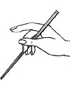
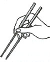
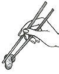
Китайские (kuaizi), они же японские (хаси) палочки
Инструкция для пользователя и тонкости этикета
Инструкция для пользователя и тонкости этикета
Пользуются палочками так:
1. Сначала берут одну палочку (на расстоянии одной трети от верхнего конца) между большим и указательным пальцами правой руки. Держат палочку большим и безымянным пальцами так, чтобы указательный, средний и большой пальцы при этом образовали кольцо.
2. Вторую палочку берут, располагая ее параллельно первой, на расстоянии 15 мм. Когда распрямляется средний палец, палочки раздвигаются.
3. Сводят палочки вместе, сгибая указательный палец, и защемляют кончиками то, что хотят отправить в рот. Кроме того, если кусок слишком большой, палочками можно его разделить, но только очень аккуратно.
Поскольку палочки - часть японской (и китайской) культуры и истории, пользование ими окружено массой условностей и церемоний. Бесчисленное множество правил и хороших манер поведения за столом в Японии также группируется вокруг палочек.
1. Сначала берут одну палочку (на расстоянии одной трети от верхнего конца) между большим и указательным пальцами правой руки. Держат палочку большим и безымянным пальцами так, чтобы указательный, средний и большой пальцы при этом образовали кольцо.
2. Вторую палочку берут, располагая ее параллельно первой, на расстоянии 15 мм. Когда распрямляется средний палец, палочки раздвигаются.
3. Сводят палочки вместе, сгибая указательный палец, и защемляют кончиками то, что хотят отправить в рот. Кроме того, если кусок слишком большой, палочками можно его разделить, но только очень аккуратно.
Поскольку палочки - часть японской (и китайской) культуры и истории, пользование ими окружено массой условностей и церемоний. Бесчисленное множество правил и хороших манер поведения за столом в Японии также группируется вокруг палочек.
В целом свод правил пользования хаси выглядит следующим образом:
# Не стучите палочками по столу, тарелке или другим предметам, чтобы подозвать официанта.
# Не "рисуйте" палочками на столе, не "бродите" бесцельно палочками вокруг еды. Прежде чем потянуться палочками к еде, выберите кусок визуально.
# Берите еду всегда сверху, не ковыряйтесь палочками в миске в поисках лучшего куска. Если вы дотронулись до еды, то ешьте (всеядные японцы просто не поймут, как можно из имеющейся еды на европейский манер выбирать кусочки получше - хотя, это их трудности).
# Не накалывайте еду на палочки – они для этого слишком тупые.
# Не трясите палочки, чтобы остудить кусок (возможен разлет пищи в непредсказуемые стороны).
# Нельзя опускать лицо в миску или подносить слишком близко ко рту, а затем с помощью палочек запихивать пищу в рот. Не утрамбовывайте во рту еду, донесенную до него при помощи палочек.
# Не облизывайте палочки (равно как ложку или вилку). Не держите палочки во рту просто так.
# Когда не пользуетесь палочками, кладите их острыми концами влево.
# Никогда не передавайте еду палочками другому человеку.
# Никогда не указывайте палочками и не размахивайте ими в воздухе (так же, как и вилкой).
# Не подтягивайте к себе тарелку при помощи палочек (ведь Вы же не делаете это ложкой?) - всегда берите ее руками.
# Прежде чем попросить еще риса, положите палочки на стол.
# Не зажимайте две палочки в кулаке: японцы воспринимают этот жест как угрожающий (но если Вы так сделаете, все равно никто не подумает, что Вы собрались на всех нападать).
# Никогда не втыкайте палочки в рис столбом. У японцев это запрещено - так подают только мертвым перед похоронами (опять-таки - ведь Вы не японец, и никто Вас не подвергнет глубокому осуждению, скорее это будет поводом для проявления японского юмора).
# Не кладите палочки поперек чашки. После того, как вы кончили есть, положите палочки на подставку.
Пользоваться хаси с непривычки нелегко, поэтому во избежание неудобств не стесняйтесь в японском (или китайском) ресторане попросить официанта показать, как правильно пользоваться палочками, а если будет совсем тяжко - принести более привычные и рациональные приборы - вилку или ложку (ведь совершенно не обязательно пытаться подражать всем этим национальным глупостям!)
В Корее тоже пользуются палочками, но рис там принято есть ложкой, особенно в присутствии старших!
У палочек как инструмента для приема пищи есть одно неоспоримое преимущество для тех, кто собрался похудеть – с помощью палочек, особенно с непривычки, почти невозможно объесться, так как это занятие надоедает и утомляет гораздо раньше, чем наступает пресыщение.